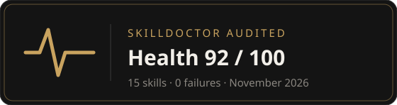

SkillPort
Health 92 of 100 · 15 skills · Verified 2026-11-22
CurrentHomepage · Repository
The live snippet for this project
[](https://dongdarealest.github.io/skilldoctor/) <a href="https://dongdarealest.github.io/skilldoctor/"><img src="https://dongdarealest.github.io/skilldoctor/badges/skillport-plaque.svg" alt="SkillDoctor audited plaque" width="560"></a>

MuseKit
Health 100 of 100 · 6 skills · Verified 2026-11-22
CurrentHomepage · Repository
The live snippet for this project
[](https://dongdarealest.github.io/skilldoctor/) <a href="https://dongdarealest.github.io/skilldoctor/"><img src="https://dongdarealest.github.io/skilldoctor/badges/musekit-plaque.svg" alt="SkillDoctor audited plaque" width="560"></a>